DOM - Document Object Model
Árvore DOM
Vamos analisar um exemplo de uma árvore DOM

Selecionando elementos
Para selecinar elementos, podemos selecinar por:
Tag
ID
Name
Class
Selector
Selecionar por marca
Para selecionar por marca, usamos o comando: window.document.getElementsByTagName('p')[1]
Neste caso, o comando indica que o elemento a ser selecionado é uma tag.
Dentro do parentese está especificando qual tag será selecionada (parágrafo)
O colchetes está indicando qual dentre os parágrafos será selecionado.
Selecionar por ID
Para selecionar por ID, usamos o comando: window.document.getElementById()
Selecionar por name
Para selecionar por name, usamos o comando: window.document.getElementsByName()[]
Selecionar por class
Para selecionar por class, usamos o comando: window.document.getElementsByClassName()[]
Selecionar por selector
Para selecionar por selector, usamos o comando:
window.document.querySelector('div.tag') ou ('id#tag')
ou o comando:
window.document.querySelectorAll('div.tag') ou ('id#tag') ou (#lista > li > label)
Para selecionar mais de um elemento, por exemplo, selecionar varios itens dentro de uma lista.
Outra maneira de enviar valores
Vamos ver aqui outra maneira de enviar valores para o DOM, fazendo a mesma interação como por seletores ou id.
Nessa primeira imagem, a única coisa de diferente é ao chamar a função com onclick, ele passa um parâmetro que a função exigia, nesse caso o parâmetro this.parentNode quer dizer... Este elemento, o nó pai que no caso seria a section, então ele manda para o DOM toda a section.

Já nessa outra imagem ele cria variáveis como antes, porém ele busca o elementos passado que no caso é a section e pede o children(filhos), depois dentre todos os filhos ele declara qual elemento filho buscar pelo id e por último solicita o valor daquele elemento.

Criando elementos
Para criar elementos usamos o comando document.createElement('li'), document se referindo ao documento HTML, createElement é o comando responsavél por criar o elemento e dentro dos parentese e das aspas informamos a tag que desejamos criar, como no exemplo:

Podemos declarar a variável com um ponto para dar um id, class, name, type e etc.
O innerTextvai inserir o conteúdo dentro do li
innerText ou innerHTML
A innerHTML permite o uso de tags direto no JavaScript, isso pode ser perigoso, pode abrir brecha na segurança pois uma pessoa mal intencionada poderia modificar as tags e colocar um script ou algo assim nas tags. O innerText adiciona um texto, como se estivesse inserindo um texto dentro da tag p ou h1.
Adicionando elementos como novo nó com DOM
appendChild
Para adicionar elementos dentro do HTML com o uso do DOM precisamos entender o conceito de pai e filho na programação. Usamos o comando appednChild(), e dentro dos parenteses informamos o filho da variável que declaramos.

Nesse exemplo, o elemento li que foi criado ou poderia ter sido um elemento modificado também, vai receber como filho o elemento criado que é um input. Já o elemento ul que foi criado com HTML e inserido por getElementById vai receber como filho o elemento newLi que foi o elemento criado acima.
Append
Quase o mesmo que o appendChild, porém permite inserir vários elementos de uma só vez.

Remover elementos como novo nó com DOM
removeChild
Para remover elementos é basicamente o mesmo procedimento, declara o elemento, usa o comando removeChild e informa qual o filho será removido, como na imagem abaixo.

Nesse exemplo, com o comando variável[variável.length -1] ele vai remover o último elemento que seria o último h3 e ul.
Remove
Para usar o remove não precisa declara quem é o pai e quem é o filho, basta chamar o remove logo depois do elemento que deseja remover, vou deixar uma imagem abaixo para melhor explicar.

Eventos
- onmouseenter - Disparado quando o mouse entrar no conteúdo.
- onmouseout - Disparado quando o mouse sair do conteúdo.
- onmousemove - Disparado quando o mouse mover dentro do conteúdo.
- onmousedown - Disparado quando o usuário clica e segura o mouse no conteúdo.
- onmouseup - Disparado quando o usuário soltar o mouse que tinha sido clicado e segurado.
- onclick - Disparado quando o mouse clica no conteúdo.
- onload - Disparado quando a página é carregada.
- ondblclick - Disparado com o duplo clique do mouse.
- onfocus - Disparado quando o input recebe um foco, ou seja, quando se clica no input.
- onblur - Disparado quando o sai do foco, no caso de um input, quando se sai do campo.
- onchange - Disparado quando ocorre uma mudança, por exemplo, quando seleciona outro item dentro de um select.
- onkeydown - Disparado quando uma tecla é pressionada.
- onkeypress - Disparado quando uma tecla é pressionada e solta.
- onkeyup - Disparado quando uma tecla é solta sobre o elemento.
- onresize - Disparado quando há um redimencionamento da janela.
addEventListener
Podemos chamar eventos no HTML, como já vimos antes, mas para adicionar eventos com JavaScript podemos usar o addEventListener que fica ouvindo ou esperando esses eventos acontecerem, o primeiro parâmetro que é preciso passar é uma string dizendo qual evento queremos adicionar, nesse caso sem o prefixo on, o segundo parâmetro é uma função de callback

Nesse exemplo, ele chama o botão pelo id para o DOM, adicionar um evento no botão de forma dinâmica, cria uma função que tem como parâmetro um evento sendo abreviado de ev, busca outros elementos através do ev que foi adicionado no botão, ele chama pelo pai que é uma section, pr isso a variável sectionElement, que foi somente para não ficar enorme o modo de buscar para o DOM.
Resumindo... ficaria assim const userName = ev.currentTarget.parentNode.children.username.value que explicando ficaria...Uma variável que armazena recebe = o evento | que está no botão | seu pai(section) | seus filhos(os filhos da section) | username | seu valor
Para alguns casos quando trabalhamos com eventos podemos observar que o navegador tem um comportamento estranho, não carregando a página e não enviando os dados de maneira correta, isso pode ocorrer com alguns eventos e para evitar esse tipo de situação vamos usar um comando que vai fazer toda a diferernça, basta chamar a função do evento ou o addEventListener e adicionar o preventDeFault()

removeEventListener
Estou dizendo que eu quero remover um tipo de evento que seja do tiop click e que tenha uma função register, ele tem uma caracterisca que ele remove, desabilita o addEventListener

Prevenindo erros de formulários
Para prevenir que o formulário atualize e não salve as iformações, basta adicionar o comando:

Selecionando inputs com DOM
Vamos ver como selecionar inputs com o DOM, cada input da sua maneira.
input text
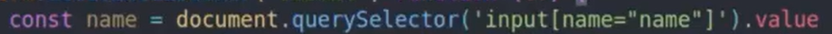input select
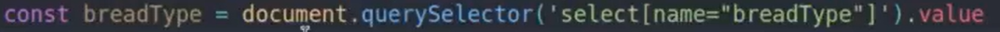input radio
input check box
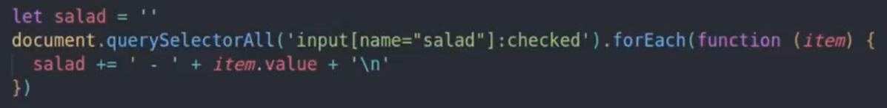
Criamos uma variável vazia, depois seleciona todos os inputs com o querySelectorAll, adicionamos :checked para selecionar somente osque foram marcados, o querySelectorAll devolve uma nodeList, que permite usar o forEach e passar uma função de callback.
Neste exemplo, para cada item selecionado, vamos estar concatenando uma string na variável que foi criada.
Dom com CSS
Estilizar com CSS
Para usar CSS utilizando o DOM, basta direcionar para a página do documento, depois direcionar onde será aplicado o estilo, usar a palavra reservada style e então declarar a mudança que deseja fazer, como no exemplo abaixo.
document.body.style.background = 'blue'
Adicionando e removendo classes
Podemos criar uma classe em CSS e adicionar de forma dinâmica usando JavaScript, como no exemplo abaixo.
Criando a classe em CSS
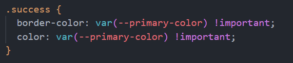Adicionando a classe.
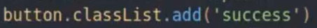Removendo a classe
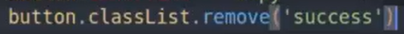Trocar de temas
Para alternar entre temas escuro e claro, vamos usar o seguinte comando... document.body.classList.toggle()
classList vai nos ajudar a manipular as listas de classes dos elementos, e o toggle vai alternar entre os temas, se um elemnto tiver aquela classe específica, ele vai remover ou se não tiver ele vai acrescentar.
Nesse exemplo, temos o body com uma classe que é a is-light, e as duas classes estão especificadas nas CSS, e o toggle alterna entre as duas.
Outra maneira de trocar tema
O root que temos em CSS
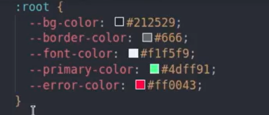Importando o root para o JavaScript.
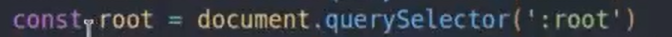Temos a tag main com atributo data, para que possamos saber qual o tema atual.
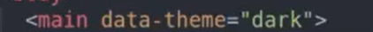Importando o main para o JavaScript.
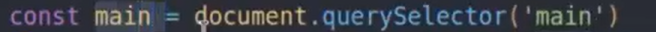Acessando as propriedades do através do atributo setProperty. Informando também que a o thema foi alterado na ultima linha do if.
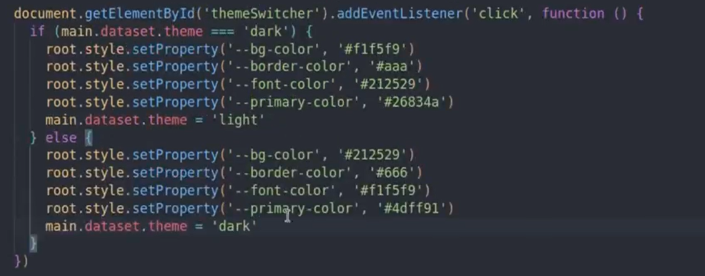Manipulação de atributos com JavaScript
Alternando atributos
Para alternar atributos, primeiro pegamos o atributo, depoiis usamos o if ternário para alternar entre os atributos desejados.
Nesse exemplo vamos modificar um input do tipo text e radio e podemos ler da seginte forma:
Se o tipo do input for diferente de radio, então ele se torna um raio, senão (se for radio) ele se torna do tipo text, com isso o input fica alternando de radio para text.
getAttribute
Para atribuir ou modificar um valor temos o exemplo abaixo, onde o método é acionado para pegar o atributo que foi passado, a diferença que o .value vai pegar o valor em tempo real enquanto o getAttribute pega o valor pre definido no HTML.
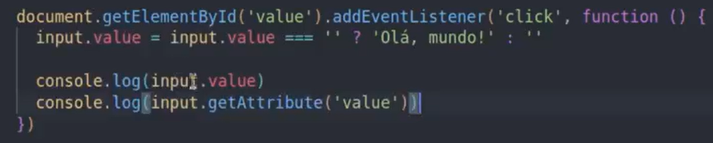setAttribute
Esse método modifica o atributo atual, basta informar o valor atual e depois o valor a ser modificado, nesse exemplo estamos modificando um input do tipo text para radio.
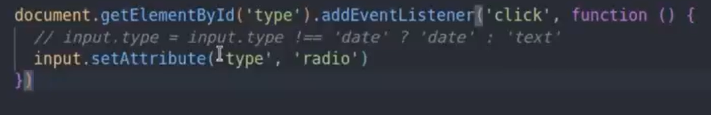Exemplo de como desabilitar um input
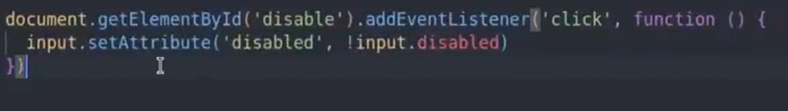Atributos data
É utilizado o atributo data para armazenar valores customizados, como se fossem variáveis no JS só que dentro dos elementos no HTML, e várias bibliotecas utilizam o atributo data.
No HTML usamos o data, o - e depois o nome da variável para armazenar.
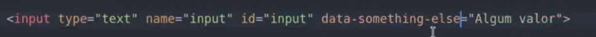Para se trabalhar com atributos data em JS usamos a propriedade dataset que referencia todos os tributos do tipo data. No exemplo abaixo primeiro pegamos o valor e depois modificamos o valor que estava sendo armazenado.
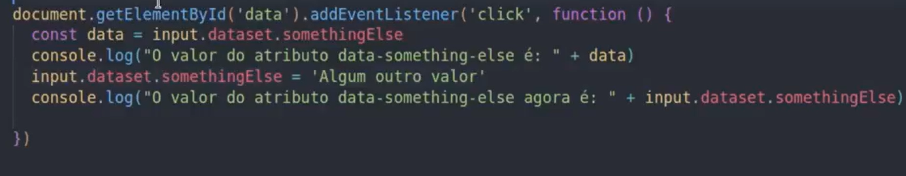Obs: No HTML usamos o método de escrita kebab-case, mas quando vamos usar no JS usaamos o métoddo cammelCase.